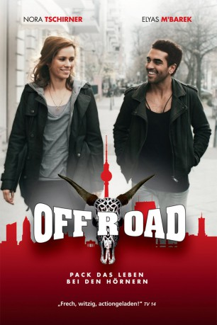

#912 Offroad
 
 IMDB-Wertung: 5.3 / 10
IMDB-Wertung: 5.3 / 10  Metascore: 0
Metascore: 0 
Einmal etwas tun, was niemand so erwarten würde! Für Meike Pelzer scheint dieses Thema mit dem Ersteigern eines vom Zoll an der deutsch-holländischen Grenze beschlagnahmten peinlichen Proll-Jeeps eigentlich erledigt. Ihr Lebensentwurf ist bisher eher dem Straßenbau entliehen: gerade und überschaubar, ohne unvorhersehbare Kurven. Das BWL-Studium ist abgeschlossen, Heirat und Übernahme des väterlichen Betriebs liegen unmittelbar vor ihr. Doch dann lässt sich Philip, ihr Verlobter, dummerweise von Meike in flagranti mit ihrer besten Freundin Denise erwischen, und Meikes Lebensplan zerplatzt wie eine Seifenblase. Als sie unter der Kofferraumverkleidung ihres neuen Jeeps 50 Kilo Kokain findet, lässt sie ihr altes Leben spontan und ohne zu zögern hinter sich und begibt sich auf einen Trip ins Ungewisse, ihrer Vorstellung nach finanziert - und betriebswirtschaftlich kalkuliert - durch die ersten Drogengeschäfte ihres Lebens!
Jahr: 2012
Dauer: 94 Minuten
FSK: 12
Land: Deutschland Studio: Paramount PicturesTonspuren:
Untertitel:
Auflösung: 1080p (1920x816) Größe: 7505 MB
Genre: Action, Komödie
Regisseur: Elmar Fischer
Drehbuch: Elmar Fischer, Susanne Hertel, Amelie Syberberg
Soundtrack: Ali N. Askin
Darsteller:
 Nora Tschirner als Meike Pelzer
Nora Tschirner als Meike Pelzer Elyas M'Barek als Salim Hekimoglu
Elyas M'Barek als Salim Hekimoglu- Tonio Arango als Tuschi
- Daniel Krauss als Polizist Paul
- Can Aydin als Türkischer Partygast
- Dominic Raacke als Vater Pelzer
- Maximilian von Pufendorf als Philip Kempermann
- Thomas Fränzel als Julian
- Stefan Rudolf als Ulf
- Nele Kiper als Sarah
- Seyneb Saleh als Özlem
- Nora Binder als Denise
- Teresa Weißbach als Mandy
- Michael Kind als Concierge
- Peter Benedict als Geschäftsmann Orloff
- Torsten Michaelis als Gerichtsvollzieher Prokow
- Inga Busch als Salims Nachbarin Ute
- Fritz Roth als Kommissar Gedeon Lier
- Mirko Lang als Kriminaltechniker Reudlinger
- Bernd Stegemann als Polizist Hardy
- Aykut Kayacik als Taxifahrer
- Constantin von Jascheroff als Junger Mann im Club
- Hürdem Riethmüller als Salims Mutter
- Yekta Arman als Salims Vater
- Michael Keseroglu als Türsteher
- Orlando Klaus als Junger Mann vor Disco
- Sunny Bansemer als Junge Frau vor Disco
- Andreas Bichler als Schläger vor Disco
- Simon Eckert als Kokser vor Disco
- Vittorio Alfieri als Auktionator
 Heiko Pinkowski als Schützenbruder Pit
Heiko Pinkowski als Schützenbruder Pit- Jürgen Hartmann als Schützenbruder René
- Ulrike Oliveri als TV-Sprecherin
- Detlef Kerseboom als Moderator Schützenfest
- John Ludwig als Barkeeper
- David Beck als Nomad Soundsystem
- Karim Sfaxi als Nomad Soundsystem
- Miloud Messabihi als Nomad Soundsystem
- Tomoki Ikeda als Nomad Soundsystem
- Thorsten Lastinger als Nomad Soundsystem
- Julia Yoo Soon Gröning als Streichquartett
- Jan Paul Kussmaul als Streichquartett
- Frauke Streichert als Streichquartett
- Anton Richter als Streichquartett
- Leslie Malton als Mutter Pelzer
 Axel Milberg als Schanowski
Axel Milberg als Schanowski- David Akinloye als Shopper , uncredited
Datei: X:\2012(N-Z)\Offroad (2012, FSK12, 1920x816).mkv seit 17.04.2015
Festplatte: HD 2012(N-Z)-2013(A-H)
 Es gibt insgesamt 138 Filme in der Gruppe '2012(N-Z)'
Es gibt insgesamt 138 Filme in der Gruppe '2012(N-Z)'